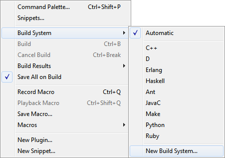
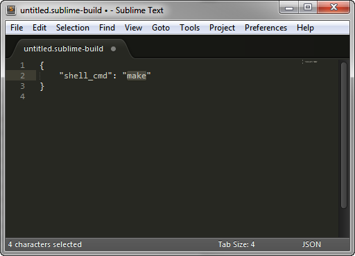

How To Set Up Sublime Text for Markdown Export to Word
Pandoc
I love Markdown, but at the end of the day, I need my writing converted from Markdown to Word. There are several ways to accomplish this, but the best way I have found on Windows is to use the command-line format conversion tool Pandoc.
Pandoc is a command-line tool for converting between several different text file formats. It converts Markdown files to Word .docx files very well. Pandoc can read Markdown and spit out a Word .docx file with the basic heading styles, bold, italic, lists, and block quotes all set up properly. You don't have to open the command line to use it, if you set up Sublime Text's "Build System".
Here is my workflow:
- Write a first draft in Sublime Text in Markdown format.
- Send the file through Pandoc to create a Word document.
- Edit the resultant Word document; or, if I need different looking styles, copy the text out of the Word document into another Word file or template that has the styles I want in it.
This is more complicated than writing a document entirely in Word, but I write faster and more comfortably in Sublime Text than in Word (with fewer formatting problems), and end up with higher quality writing.
First, how to use Pandoc on the command line
Here is the Pandoc command to convert a Markdown file to Word format:
pandoc -o output.docx -f markdown -t docx mardown-file.mdThis command looks a bit cryptic, so let's unpack it:
pandoc: Pandoc is the program. That's easy.-o: This is the output file name, which in our example is "output.docx".-f: This means "from" or "format", as in, "convert from the format". The format we are converting from is Markdown, so "markdown" follows "-f".-t: This means "to", or "convert to the format". Since we are outputting a .docx file, "docx" follows "-t".
I needed to figure out how this command was put together solely to configure it one time in Sublime Text.
Next, configure Sublime Text's build system for Markdown to Word conversion
I don't use Pandoc via the command line; instead, I use it as a plug-in to my preferred text editor, Sublime Text. Programmer's editors like Sublime Text are perfect for using "text filters" or "build systems" to take the file you're working on and send it to another program or process.
Programmers send the text from their editors to software compilers to build executable programs from their source code. In a very simplified sense, a compiler is just a filter for text files: you send one type of file to it, and it outputs another type of file. Converting Markdown to HTML or Word is a similar idea. So we can commandeer Sublime Text's build process to run a Markdown converter rather than a compiler.
Here is how to set up the build system.
First, install Pandoc on your system.
In Sublime Text, create a new Build System. You can do so by clicking the menu item Tools > Build System > New Build System...

This command creates a new build system file, which looks like this:

Edit this file to contain the following code (or just download my file). Change change the output path (C:/Users/etc.) to suit your needs; use forward slashes instead of backslashes on Windows.
{ "cmd": ["pandoc", "-S", "-s", "-f", "markdown", "-t", "docx", "-o", "C:/Users/MyUserName/Documents/Docs/@Inbox/$file_base_name.docx", "$file_name"], "selector": "text.html.markdown" }
The first setting, "cmd", defines the command for the build system to run. "$file_base_name" and "$file_name" are variables that Sublime Text supplies. The second setting, "selector", defines the type of file the build system runs on. When set correctly, it enables Sublime Text to know that, when running a Markdown file through the build system, it should be piped to Pandoc through this build system.
Save the file as "pandoc-markdown-to-word.sublime-build" in your Sublime Text "User" folder (which should be the default folder Sublime Text presents to you when you try to save the file).
Restart Sublime Text.
Finally, using the Build System
After configuring "pandoc-markdown-to-word.sublime-build", open a Markdown file, and build the file by typing control+b or F7 (or via the menu command Tools > Build). If you set everything up correctly, your file will be converted to a Word .docx file in the path you set up in your build system. My files are output to "C:/Users/MyUserName/Documents/Docs/@Inbox/". The file name will be the same as your Markdown file's name, but with a .docx extension.
The resultant Word document will have proper headings and character styles you set in Markdown. You can now edit the Word document, or copy and paste its text into another Word document, and finalize your work. Minor formatting and spell-check may be all that is left for you to do in Word before publishing or sending out your new first draft.